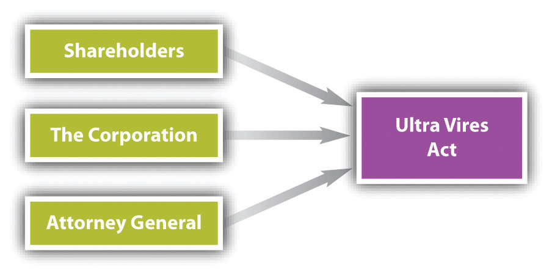

A corporation generally has three parties sharing power and control: directors, officers, and shareholders. Directors are the managers of the corporation, and officers control the day-to-day decisions and work more closely with the employees. The shareholders are the owners of the corporation, but they have little decision-making authority. The corporation itself has powers; while a corporation is not the same as a person (e.g., a corporation cannot be put in prison), it is allowed to conduct certain activities and has been granted certain rights.
The corporation may exercise all powers expressly given it by statute and by its articles of incorporation. Section 3.02 of the Revised Model Business Corporation Act (RMBCA) sets out a number of express powersPowers granted to a corporation through statute and its articles of incorporation., including the following: to sue and be sued in the corporate name; to purchase, use, and sell land and dispose of assets to the same extent a natural person can; to make contracts, borrow money, issue notes and bonds, lend money, invest funds, make donations to the public welfare, and establish pension plans; and to join in partnerships, joint ventures, trusts, or other enterprises. The powers set out in this section need not be included in the articles of incorporation.
Corporate powers beyond those explicitly established are implied powersCorporate powers that extend beyond those powers explicitly defined as express powers.. For example, suppose BCT Bookstore, Inc.’s statement of purpose reads simply, “to operate a bookstore.” The company may lawfully conduct all acts that are necessary or appropriate to running a bookstore—hiring employees, advertising special sales, leasing trucks, and so forth. Could Ted, its vice president and general manager, authorize the expenditure of funds to pay for a Sunday afternoon lecture on the perils of nuclear war or the adventures of a professional football player? Yes—if the lectures are relevant to current books on sale or serve to bring people into the store, they comply with the corporation’s purpose.
The law places limitations upon what acts a corporation may undertake. Corporations cannot do anything they wish, but rather, must act within the prescribed rules as laid out in statute, case law, their articles of incorporation, and their bylaws. Sometimes, though, a corporation will step outside its permitted power (literally “beyond the powers). The ultra vires doctrineA doctrine holding that certain legal consequences attach to an attempt by a corporation to carry out acts that are outside its lawful powers. holds that certain legal consequences attach to an attempt by a corporation to carry out acts that are outside its lawful powers. Ultra vires (literally “beyond the powers”) is not limited to illegal acts, although it encompasses actions barred by statute as well as by the corporate charter. Under the traditional approach, either the corporation or the other party could assert ultra vires as a defense when refusing to abide by a wholly executory contract. The ultra vires doctrine loses much of its significance when corporate powers are broadly stated in a corporation’s articles. Furthermore, RMBCA Section 3.04 states that “the validity of corporate action may not be challenged on the ground that the corporation lacks or lacked power to act.”
Nonetheless, ultra vires acts are still challenged in courts today. For example, particularly in the area of environmental law, plaintiffs are challenging corporate environmental actions as ultra vires. Delaware corporation law states that the attorney general shall revoke the charter of a corporation for illegal acts. Additionally, the Court of Chancery of Delaware has jurisdiction to forfeit or revoke a corporate charter for abuse of corporate powers.Del. Code Ann., Title 8, Section 284 (2011). See Adam Sulkowski’s “Ultra Vires Statutes: Alive, Kicking, and a Means of Circumventing the Scalia Standing Gauntlet.”Adam Sulkowski, “Ultra Vires Statutes: Alive, Kicking, and a Means of Circumventing the Scalia Standing Gauntlet,” Journal of Environmental Law and Litigation 14, no. 1 (2009): 75.
In essence, ultra vires retains force in three circumstances:
Figure 27.1 Attacks on Ultra Vires Acts
Suppose an incorporated luncheon club refuses to admit women as club members or guests. What happens if this action is ultra vires? Cross v. The Midtown Club, Inc. (see Section 27.5.1 "Ultra Vires Acts"), focuses on this issue. An ultra vires act is not necessarily criminal or tortious. However, every crime and tort is in some sense ultra vires because a corporation never has legal authority to commit crimes or torts. They raise special problems, to which we now turn.
The early common law held that a corporation could not commit a crime because it did not have a mind and could not therefore have the requisite intent. An additional dilemma was that society could not literally imprison a corporation. Modern law is not so constricting. Illegal acts of its agents may be imputed to the corporation. Thus if the board of directors specifically authorizes the company to carry out a criminal scheme, or the president instructs his employees to break a regulatory law for the benefit of the company, the corporation itself may be convicted. Of course, it is rare for people in a corporate setting to avow their criminal intentions, so in most cases courts determine the corporation’s liability by deciding whether an employee’s crime was part of a job-related activity. The individuals within the corporation are much more likely to be held legally liable, but the corporation may be as well. For example, in extreme cases, a court could order the dissolution of the corporation; revoke some or all of its ability to operate, such as by revoking a license the corporation may hold; or prevent the corporation from engaging in a critical aspect of its business, such as acting as a trustee or engaging in securities transactions. But these cases are extremely rare.
That a corporation is found guilty of a violation of the law does not excuse company officials who authorized or carried out the illegal act. They, too, can be prosecuted and sent to jail. Legal punishments are being routinely added to the newer regulatory statutes, such as the Occupational Safety and Health Act, and the Toxic Substances Control Act—although prosecution depends mainly on whether and where a particular administration wishes to spend its enforcement dollars. Additionally, state prosecuting attorneys have become more active in filing criminal charges against management when employees are injured or die on the job. For instance, a trial court judge in Chicago sentenced a company president, plant manager, and foreman to twenty-five years in prison after they were convicted of murder following the death of a worker as a result of unsafe working conditions at a plant;People v. O’Neil, 550 N.E.2d 1090 (Ill. App. 1990). the punishments were later overturned, but the three pled guilty several years later and served shorter sentences of varying duration.
More recently, prosecutors have been expanding their prosecutions of corporations and developing methodologies to evaluate whether a corporation has committed a criminal act; for example, US Deputy Attorney General Paul McNulty revised “Principles of Federal Prosecutions of Business Organizations” in 2006 to further guide prosecutors in indicting corporations. The Securities and Exchange Commission, the Department of Justice, other regulatory bodies, and legal professionals have increasingly sought legal penalties against both corporations and its employees. See Exercise 2 at the end of this section to consider the legal ramifications of a corporation and its employees for the drunk-driving death of one of its patrons.
In certain cases, the liability of an executive can be vicarious. The Supreme Court affirmed the conviction of a chief executive who had no personal knowledge of a violation by his company of regulations promulgated by the Food and Drug Administration. In this case, an officer was held strictly liable for his corporation’s violation of the regulations, regardless of his knowledge, or lack thereof, of the actions (see Chapter 6 "Criminal Law").United States v. Park, 421 U.S. 658 (1975). This stands in contrast to the general rule that an individual must know, or should know, of a violation of the law in order to be liable. Strict liability does not require knowledge. Thus a corporation’s top managers can be found criminally responsible even if they did not directly participate in the illegal activity. Employees directly responsible for violation of the law can also be held liable, of course. In short, violations of tort law, criminal law, and regulatory law can result in negative consequences for both the corporation and its employees.
A corporation has two types of powers: express powers and implied powers. When a corporation is acting outside its permissible power, it is said to be acting ultra vires. A corporation engages in ultra vires acts whenever it engages in illegal activities, such as criminal acts.